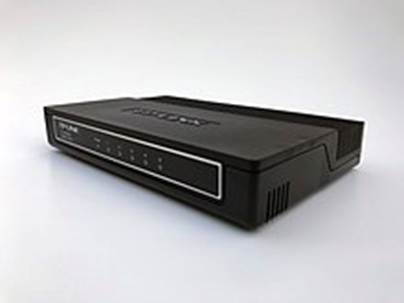
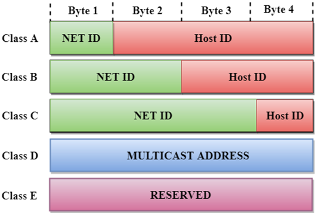

COMPUTER NETWORKS LAB PROJECT DESIGNING A CORPORATE NETWORK
(A Project for Dept. of CSE Computer Networks Lab)
Under Supervision of
Dr. KHONDEKAR LUTFUL HASSAN
DEPT. of COMPUTER SCIENCE and ENGINEERING
ALIAH UNIVERSITY
NEWTOWN, KOLKATA
GROUP MEMBERS
|
NAME |
ROLL |
DEPT |
|
AVIRUK BASAK |
CSE214047 |
CSE |
|
RITAM PAUL |
CSE214061 |
CSE |
PREFACE
This project, “Corporate Building Network Management,” is the culmination of a collaborative effort by a team of three dedicated members from Aliah University. Utilizing Cisco Packet Tracer as our primary tool, we have designed and implemented a comprehensive network management system tailored for a corporate building environment. This endeavor not only aims to demonstrate our proficiency in network design and management but also seeks to provide a robust solution that ensures seamless connectivity, security, and efficiency within a corporate setting.
Throughout the course of this project, we have delved into various aspects of network management, including but not limited to, topology design, IP addressing, and network security protocols. Our objective has been to create a network infrastructure that can support the dynamic and multifaceted needs of a modern corporate building, ensuring high performance and reliability.
We extend our heartfelt gratitude to our faculty advisor, Dr. Khondekar Lutful Hassan, whose guidance and expertise have been invaluable throughout this project. We also appreciate the support from our peers and the resources provided by Aliah University, which have played a crucial role in the successful completion of this project.
This project has been a significant learning experience, allowing us to apply theoretical knowledge in a practical setting and collaborate effectively as a team. We hope that this report provides a comprehensive insight into our approach, methodologies, and the technical challenges we encountered and overcame.
We are confident that the network management solution presented in this project will serve as a testament to our skills and dedication, and we look forward to its potential application in real-world scenarios.
Sincerely,
Team member 1: Aviruk Basak
Team member 2: Ritam Paul
College: Aliah University, Kolkata 700156
DECLARATION
We, the undersigned, hereby declare that the project titled “Corporate Building Network Management,” submitted to Aliah University, is a record of original work carried out by us during 6th semester under the guidance of Dr. Khondekar Lutful Hassan. This project is submitted in partial fulfillment of the requirements for the degree of 4-year B. Tech in CSE at Aliah University.
We affirm that the content presented in this project is our own, and any external sources used have been appropriately acknowledged and referenced. We further declare that this project has not been submitted, in part or in full, for any other degree or qualification at any other institution.
The work presented in this project was carried out using Cisco Packet Tracer as the primary tool for developing and simulating the network management system for a corporate building. We have designed, implemented, and tested various network configurations, ensuring they meet the standards of efficiency, security, and reliability required for a modern corporate environment.
We are collectively responsible for the research and development undertaken in this project and are proud to present the findings and solutions developed as a result of our collaborative efforts.
Signed,
Team member 1: Aviruk Basak
Student Roll: CSE214047
Team member 2: Ritam Paul
Student Roll: CSE214061
College: Aliah University, Kolkata 700156
ACKNOWLEDGEMENT
I would like to express my sincere gratitude to all those who have supported me throughout the course of this project.
First and foremost, I extend my deepest thanks to our faculty advisor, Dr. Khondekar Lutful Hassan sir, whose expertise, guidance, and encouragement were invaluable to the successful completion of this project. His insightful feedback and unwavering support have been crucial in shaping my work.
I also immensely grateful to Aliah University for providing the necessary resources and a conducive environment for my research and development. The access to state-of-the-art facilities and software tools has greatly facilitated my project.
My heartfelt thanks go to my peers and fellow students, whose collaboration and shared insights have enriched my understanding and approach. The discussions and exchanges of ideas have been instrumental in refining my project.
I would also like to acknowledge the support and patience of my families and friends. Their understanding and encouragement have been a constant source of motivation throughout this journey.
Lastly, I extend my appreciation to all the individuals and organizations whose contributions, directly or indirectly, have helped me in completing this project.
This project has been a significant learning experience, and I am grateful for the opportunity to apply my knowledge and skills in a practical setting. We hope that my work will contribute positively to the academic and professional community.
Sincerely,
Name: Aviruk Basak
Roll: CSE214047
College: Aliah University, Kolkata 700156
ACKNOWLEDGEMENT
I would like to express my sincere gratitude to all those who have supported me throughout the course of this project.
First and foremost, I extend my deepest thanks to our faculty advisor, Dr. Khondekar Lutful Hassan sir, whose expertise, guidance, and encouragement were invaluable to the successful completion of this project. His insightful feedback and unwavering support have been crucial in shaping my work.
I also immensely grateful to Aliah University for providing the necessary resources and a conducive environment for my research and development. The access to state-of-the-art facilities and software tools has greatly facilitated my project.
My heartfelt thanks go to my peers and fellow students, whose collaboration and shared insights have enriched my understanding and approach. The discussions and exchanges of ideas have been instrumental in refining my project.
I would also like to acknowledge the support and patience of my families and friends. Their understanding and encouragement have been a constant source of motivation throughout this journey.
Lastly, I extend my appreciation to all the individuals and organizations whose contributions, directly or indirectly, have helped me in completing this project.
This project has been a significant learning experience, and I am grateful for the opportunity to apply my knowledge and skills in a practical setting. We hope that my work will contribute positively to the academic and professional community.
Sincerely,
Name: Ritam Paul
Roll: CSE214061
College: Aliah University, Kolkata 700156
SUMMARY
The “Corporate Building Network Management” project, developed by our team of three members at Aliah University, focuses on designing and implementing an efficient and secure network infrastructure for a corporate building. Utilizing Cisco Packet Tracer as our primary tool, we aimed to create a comprehensive network management system that ensures seamless connectivity and robust security throughout the corporate environment.
This project involved detailed planning, design, and simulation to address the dynamic needs of a modern corporate building. Our objective was to develop a network that supports high performance, reliability, and scalability, catering to the various operational requirements of a corporate setting. By integrating best practices in network management and leveraging advanced tools, we have crafted a solution that meets the demands of today’s business environments.
The collaboration and collective efforts of our team have been central to the successful completion of this project. Through thorough research, practical application, and iterative testing, we have developed a network management system that is both practical and innovative. This project has been a significant learning experience, allowing us to apply theoretical knowledge in a real-world scenario and enhance our understanding of network management principles.
We are confident that our work will contribute positively to the field of network management and serve as a valuable reference for future projects and studies.
CONTENTS
– Networks
– Others
– NAT
– Private IP Address Allocation
– DHCP Configuration
• Network 192.168.1.0/24
• Network 192.168.2.0/24
• Network 192.168.3.0/24
– PC Configuration
– Private Router Configuration
– Public IP Address Allocation
– Distant Network IP Address Allocation
– Distant Router Configuration
ABBREVIATIONS
INTERFACES
• CFE - Copper FastEthernet
• CGE - Copper GigabitEthernet
• FFE - Fiber FastEthernet
• FGE - Fiber GigabitEthernet
PROTOCOLS
• IPv4 - Internet Protocol version 4
• IPv6 - Internet Protocol version 6
• HTTP - HyperText Transfer Protocol
• DHCP - Dynamic Host Configuration Protocol
• DNS - Domain Name System
NETWORKS
• LAN - Local Area Network
• WAN - Wide Area Network
• WLAN - Wireless Local Area Network
OTHERS
• PC - Personal Computer
• ISP - Internet Service Provider
• NAT - Network Address Translation
OBJECTIVE
To design a network for a corporate office with following features.
DEVICE DISTRIBUTION
The corporate office has 3 floors with 3 computer rooms per floor. Each room has a total of 20 computers. Additionally, each floor has 2 Wi-Fi access points and supports a maximum of 25 WLAN devices each. In total, each floor supports a maximum of 20 + 2 * 25 = 70 network end devices.
PRIVATE NETWORK
Each floor belongs to a different sub-network (LAN). Hence, there are 3 sub-networks, 1 for each floor.
As an example, rooms 1, 2, and 3 from floor 1 form 1 subnet.
PUBLIC NETWORK
The corporate office has been given its own IP range by an ISP. Therefore, the office can maintain its own set of public servers as required.
The office public net maintains its own DNS and HTTP servers in the public net.
Additionally, to allow devices in private net to communicate with the public internet, NAT is implemented.
IP ADDRESS ALLOCATION
Both private and public networks of the office will have DHCP servers to allocate IPv4 addresses to connected devices.
IPv6 addresses will not be used in any of the networks.
NAT
The public office router will be configured to support NAT when forwarding packets to and from the IP addressed belonging to devices in the private net.
THEORY
NETWORKING DEVICES
GATEWAY
A network gateway provides a connection between networks and contains devices, such as protocol translators, impedance matchers, rate converters, fault isolators, or signal translators. A network gateway requires the establishment of mutually acceptable administrative procedures between the networks using the gateway. Network gateways, known as protocol translation gateways or mapping gateways, can perform protocol conversions to connect networks with different network protocol technologies. For example, a network gateway connects an office or home intranet to the Internet. If an office or home computer user wants to load a web page, at least two network gateways are accessed—one to get from the office or home network to the Internet and one to get from the Internet to the computer that serves the web page.
On an Internet Protocol (IP) network, IP packets with a destination outside a given subnetwork are sent to the network gateway. For example, if a private network has a base IPv4 address of 192.168.1.0 and has a subnet mask of 255.255.255.0, then any data addressed to an IP address outside of 192.168.1.0–192.168.1.255 is sent to the network gateway. IPv6 networks work in a similar way. While forwarding an IP packet to another network, the gateway may perform network address translation.
In enterprise networks, a network gateway usually also acts as a proxy server and a firewall.
On Microsoft Windows, the Internet Connection Sharing feature allows a computer to act as a gateway by offering a connection between the Internet and an internal network.
ROUTER
A router is a computer and networking device that forwards data packets between computer networks, including internetworks such as the global Internet.
A router is connected to two or more data lines from different IP networks. When a data packet comes in on a line, the router reads the network address information in the packet header to determine the ultimate destination. Then, using information in its routing table or routing policy, it directs the packet to the next network on its journey. Data packets are forwarded from one router to another through an internetwork until it reaches its destination node.
The most familiar type of IP routers are home and small office routers that forward IP packets between the home computers and the Internet. More sophisticated routers, such as enterprise routers, connect large business or ISP networks to powerful core routers that forward data at high speed along the optical fiber lines of the Internet backbone.
A carrier class router with 10G/40G/100G interfaces and redundant processor/power/fan modules Routers can be built from standard computer parts but are mostly specialized purpose-built computers. Early routers used software-based forwarding, running on a CPU. More sophisticated devices use application-specific integrated circuits (ASICs) to increase performance or add advanced filtering and firewall functionality.
ETHERNET HUB
An Ethernet hub, active hub, network hub, repeater hub, multiport repeater, or simply hub is a network hardware device for connecting multiple Ethernet devices together and making them act as a single network segment. It has multiple input/output (I/O) ports, in which a signal introduced at the input of any port appears at the output of every port except the original incoming. A hub works at the physical layer. A repeater hub also participates in collision detection, forwarding a jam signal to all ports if it detects a collision. In addition to standard 8P8C (“RJ45”) ports, some hubs may also come with a BNC or an Attachment Unit Interface (AUI) connector to allow connection to legacy 10BASE2 or 10BASE5 network segments.
Hubs are now largely obsolete, having been replaced by network switches except in very old installations or specialized applications. As of 2011, connecting network segments by repeaters or hubs is deprecated by IEEE 802.3.
SWITCH
A network switch (also called switching hub, bridging hub, and, by the IEEE, MAC bridge) is networking hardware that connects devices on a computer network by using packet switching to receive and forward data to the destination device.
A network switch is a multiport network bridge that uses MAC addresses to forward data at the data link layer (layer 2) of the OSI model. Some switches can also forward data at the network layer (layer 3) by additionally incorporating routing functionality. Such switches are commonly known as layer-3 switches or multilayer switches.
Switches for Ethernet are the most common form of network switch. The first MAC Bridge was invented in 1983 by Mark Kempf, an engineer in the Networking Advanced Development group of Digital Equipment Corporation. The first 2 port Bridge product (LANBridge 100) was introduced by that company shortly after. The company subsequently produced multi-port switches for both Ethernet and FDDI such as GigaSwitch. Digital decided to license its MAC Bridge patent in a royalty-free, non-discriminatory basis that allowed IEEE standardization. This permitted a number of other companies to produce multi-port switches, including Kalpana. Ethernet was initially a shared-access medium, but the introduction of the MAC bridge began its transformation into its most-common point-to-point form without a collision domain. Switches also exist for other types of networks including Fibre Channel, Asynchronous Transfer Mode, and InfiniBand.
Unlike repeater hubs, which broadcast the same data out of each port and let the devices pick out the data addressed to them, a network switch learns the Ethernet addresses of connected devices and then only forwards data to the port connected to the device to which it is addressed.

WIRELESS ACCESS POINT
In computer networking, a wireless access point, or more generally just access point (AP), is a networking hardware device that allows other Wi-Fi devices to connect to a wired network or wireless network. As a standalone device, the AP may have a wired connection to a switch or router, but, in a wireless router, it can also be an integral component of the router itself. An AP is differentiated from a hotspot, which is a physical location where Wi-Fi access is available.
Although WAP has been used incorrectly to describe an access point, WAP refers to Wireless Application Protocol, which is a protocol rather than a tangible device.
STRUCTURED CABLING
In telecommunications, structured cabling is building or campus cabling infrastructure that consists of a number of standardized smaller elements (hence structured) called subsystems. Structured cabling components include twisted pair and optical cabling, patch panels and patch cables.

NETWORK ADDRESS TRANSLATION
Network address translation (NAT) is a method of mapping an IP address space into another by modifying network address information in the IP header of packets while they are in transit across a traffic routing device. The technique was originally used to bypass the need to assign a new address to every host when a network was moved, or when the upstream Internet service provider was replaced, but could not route the network’s address space. It has become a popular and essential tool in conserving global address space in the face of IPv4 address exhaustion. One Internet-routable IP address of a NAT gateway can be used for an entire private network.
As network address translation modifies the IP address information in packets, NAT implementations may vary in their specific behavior in various addressing cases and their effect on network traffic. The specifics of NAT behavior are not commonly documented by vendors of equipment containing NAT implementations.
NETWORK ADDRESSING
• Network Addressing is one of the major responsibilities of the network layer.
• Network addresses are always logical, i.e., software-based addresses.

• A host is also known as end system that has one link to the network. The boundary between the host and link is known as an interface. Therefore, the host can have only one interface.
• A router is different from the host in that it has two or more links that connect to it. When a router forwards the datagram, then it forwards the packet to one of the links. The boundary between the router and link is known as an interface, and the router can have multiple interfaces, one for each of its links. Each interface is capable of sending and receiving the IP packets, so IP requires each interface to have an address.
• Each IP address is 32 bits long, and they are represented in the form of “dot-decimal notation” where each byte is written in the decimal form, and they are separated by the period. An IP address would look like 193.32.216.9 where 193 represents the decimal notation of first 8 bits of an address, 32 represents the decimal notation of second 8 bits of an address.
SUBNETTING
Subnetting is a combination of two words i.e. Sub and Netting. Here Sub word means Substitute and netting word means Network. The Substitute Network created for a function to happen is known as Subnetting.
Here, Substitute Network does not mean a new network is created. A full piece of network is broken into small pieces and each piece a different is assigned.
Subnet is the name given to piece of the broken network or can also be called as the Substitute network is known as Subnet. Subnets are the legal small parts of IP (Internet Protocol) Addressing process.
Subnetting should be done in such a way that network does not gets affected. This means that we can divide the network into different parts but all when put together should perform the same task when done before splitting in to small parts.
Subnets reduce the need for traffic to use unnecessary routes, which speeds up the network. To help with the lack of IP addresses on the internet, subnets were developed.
Subnetting is a technique for creating logical sub-networks from a single physical network (subnets). A company can grow its network via subnetting without asking for a new network number from its ISP. Subnetting hides network complexity while assisting in the reduction of network traffic. Here, a network which is unique has to provide its services to many Local Area Networks i.e. (LAN). So, for this reason Subnetting is extensively used.
Do you know what these little subnets are? As we all know, subnetting divides networks into them. A subnet is a smaller network, also referred to as a sub network. An IP network is logically divided into several smaller network components by subnets. A subnet is used to divide a large network into a number of smaller, linked networks, which helps to minimize traffic. Subnets reduce the need for traffic to use unnecessary routes, which speeds up the network. To help with the lack of IP addresses on the internet, subnets were developed.
A rapid, effective, and reliable computer network is what subnetting is meant to create. Network traffic must find more effective routes as they become larger and more complicated. If all network traffic used the same path and moved through the system at once, bottlenecks and congestion would form, creating sluggish and inefficient backlogs. You may reduce the number of routers that network traffic must transit through by setting up a subnet. In order to make traffic go the shortest distance feasible inside a bigger network, an engineer will effectively create smaller mini routes.
NETWORK DESIGN
NETWORK DEVICES
• 20 PCs per room
• 1 DHCP server per floor
• 2 Wi-Fi access points per floor
• 1 hub per room
• 1 layer 2 switch per floor
• 1 private router
• 1 layer 2 switch for the public network
• 1 public router
NETWORK DIAGRAM
NETWORK TOPOLOGY
• Connect (via CFE) 20 PCs per room to corresponding hubs
• Connect (via CFE) DHCP servers per floor to the first hub
• Connect (via CFE) hubs per floor to corresponding layer 2 switches
• Connect (via CFE) Wi-Fi per floor to corresponding layer 2 switches
• Connect (via CGE) switches per floor to private router
• Connect (via CGE) private router to public network layer 2 switch
• Connect (via CGE) public network switch to public router
• Connect (via FGE) public router to ISP router
• Connect (via FGE) necessary servers to public network switch
PACKET TRACER PERFORMANCE CONSTRAINTS
Only 3 PCs per room will show using Cisco Packet Tracer due to performance constraints. Additionally, only 1 Wi-Fi and 2 smartphones will be shown per floor.
However, the design and IP allocation will be done to accommodate 20 PCs per room and required number of Wi-Fi devices.
PRIVATE IP ADDRESS ALLOCATION
• Floor 1: 192.168.1.0. Configure DHCP to allocate 251 addresses from 192.168.1.5.
• Floor 2: 192.168.2.0. Configure DHCP to allocate 251 addresses from 192.168.2.5.
• Floor 3: 192.168.3.0. Configure DHCP to allocate 251 addresses from 192.168.3.5.
DHCP CONFIGURATION
NETWORK 192.168.1.0/24
• Goto Services tab
• Service: DHCP
• Set service as ON
• Start IP: 192.168.1.5
• Mask: 255.255.255.0
• Default Gateway: 192.168.1.1
• DNS: 200.123.123.3
• Click Save
NETWORK 192.168.2.0/24
• Goto Services tab
• Service: DHCP
• Set service as ON
• Start IP: 192.168.2.5
• Mask: 255.255.255.0
• Default Gateway: 192.168.2.1
• DNS: 200.123.123.3
• Click Save
NETWORK 192.168.3.0/24
• Goto Services tab
• Service: DHCP
• Set service as ON
• Start IP: 192.168.3.5
• Mask: 255.255.255.0
• Default Gateway: 192.168.3.1
• DNS: 200.123.123.3
• Click Save
PC CONFIGURATION
• Goto Desktop tab
• Select IP address mode as DHCP
• IP address will be automatically assigned
|
DHCP CONFIGURATION EXAMPLE |
PC CONFIGURATION EXAMPLE |
|
|
|
PRIVATE ROUTER CONFIGURATION
• Give interface to floor 1 switch IP address 192.168.1.1/24.
• Give interface to floor 2 switch IP address 192.168.2.1/24.
• Give interface to floor 3 switch IP address 192.168.3.1/24.
• Give interface to public router IP address 200.123.123.2/24.
INTERFACE CONFIGURATION
PRIVATE_ROUTER> en
PRIVATE_ROUTER#
conf t
PRIVATE_ROUTER(config)#
interface CGE0/0
PRIVATE_ROUTER(config-if)#
ip address 192.168.1.1 255.255.255.0
PRIVATE_ROUTER(config-if)#
no shutdown
PRIVATE_ROUTER(config-if)#
exit
PRIVATE_ROUTER(config)#
interface CGE0/1 192.168.2.1 255.255.255.0
PRIVATE_ROUTER(config-if)#
ip address
PRIVATE_ROUTER(config-if)#
no shutdown
PRIVATE_ROUTER(config-if)#
exit
PRIVATE_ROUTER(config)#
interface CGE0/2 192.168.3.1 255.255.255.0
PRIVATE_ROUTER(config-if)#
ip address
PRIVATE_ROUTER(config-if)#
no shutdown
PRIVATE_ROUTER(config-if)#
exit
PRIVATE_ROUTER(config)#
interface CGE0/3
PRIVATE_ROUTER(config-if)#
ip address 200.123.123.2 255.255.255.0
PRIVATE_ROUTER(config-if)#
no shutdown
PRIVATE_ROUTER(config-if)#
exit
PRIVATE_ROUTER(config)#
exit
PRIVATE_ROUTER#
write memory
PUBLIC IP ADDRESS ALLOCATION
• Public network bought from ISP is 200.123.123.0/24.
• Dynamic NAT is configured to allocate 100 addresses from 200.123.123.100 to private network devices.
• A private network of 172.16.10.0/24 is used to connect the public router to the ISP router.
PUBLIC ROUTER CONFIGURATION
INTERFACE CONFIGURATION
PUBLIC_ROUTER> en
PUBLIC_ROUTER#
conf t
PUBLIC_ROUTER(config)#
interface FGE0/0
PUBLIC_ROUTER(config-if)#
ip address 170.16.10.6 255.255.255.0
PUBLIC_ROUTER(config-if)#
no shutdown
PUBLIC_ROUTER(config-if)#
exit
PUBLIC_ROUTER(config)#
interface FGE0/1
PUBLIC_ROUTER(config-if)#
ip address 200.123.123.1 255.255.255.0
PUBLIC_ROUTER(config-if)#
no shutdown
PUBLIC_ROUTER(config-if)#
exit
PUBLIC_ROUTER(config)#
exit
PUBLIC_ROUTER#
write memory
DYNAMIC NAT CONFIGURATION
PUBLIC_ROUTER> en
PUBLIC_ROUTER#
conf t
PUBLIC_ROUTER(config)#
ip nat pool NAT_POOL 200.123.123.100 200.123.123.200 netmask 255.255.255.0
PUBLIC_ROUTER(config)#
access-list 1 permit 192.168.0.0 0.0.255.255
PUBLIC_ROUTER(config)#
ip nat inside source list 1 pool NAT_POOL
PUBLIC_ROUTER(config)#
interface FGE0/0
PUBLIC_ROUTER(config-if)#
ip nat outside
PUBLIC_ROUTER(config-if)#
interface CFE0/0
PUBLIC_ROUTER(config-if)#
ip nat inside
PUBLIC_ROUTER(config-if)#
exit
PUBLIC_ROUTER(config)#
exit
PUBLIC_ROUTER#
write memory
DISTANT NETWORK IP ADDRESS ALLOCATION
• Public network present far away is 100.0.0.0/8.
• Distant network is similar to the internet and holds public services such as web servers.
• A private network of 172.16.10.0/24 is used to connect the public router to the corporate public router.
DISTANT ROUTER CONFIGURATION
INTERFACE CONFIGURATION
PUBLIC_ROUTER> en
PUBLIC_ROUTER#
conf t
PUBLIC_ROUTER(config)#
interface FGE0/0
PUBLIC_ROUTER(config-if)#
ip address 170.16.10.5 255.255.255.0
PUBLIC_ROUTER(config-if)#
no shutdown
PUBLIC_ROUTER(config-if)#
exit
PUBLIC_ROUTER(config)#
interface FGE0/1
PUBLIC_ROUTER(config-if)#
ip address 100.0.0.1 255.255.255.0
PUBLIC_ROUTER(config-if)#
no shutdown
PUBLIC_ROUTER(config-if)#
exit
PUBLIC_ROUTER(config)#
exit
PUBLIC_ROUTER#
write memory
CONCLUSION
This network design project has significantly enhanced our understanding of key networking technologies and their real-world applications. By integrating DNS, DHCP, IPv4, routers, L2 switches, hubs, and Wi-Fi access points, we have developed a comprehensive view of how these components interact to form a robust network infrastructure.
DNS was essential for translating domain names into IP addresses, facilitating user access to network resources. DHCP automated IP address assignment, improving network scalability and management. **IPv4** formed the backbone of our communication, highlighting the importance of addressing schemes and routing.
Routers directed data packets between network segments, enhancing performance and security. L2 switches managed data flow within local segments, improving efficiency. Hubs, though basic, illustrated the evolution of network devices. Wi-Fi access points enabled wireless connectivity, showcasing the importance of mobility in modern networks.
This project has provided practical insights into each technology's functionality and demonstrated their collective importance in building an efficient network. The hands-on experience has been invaluable in understanding the intricacies of network design and the essential roles these technologies play in everyday operations.